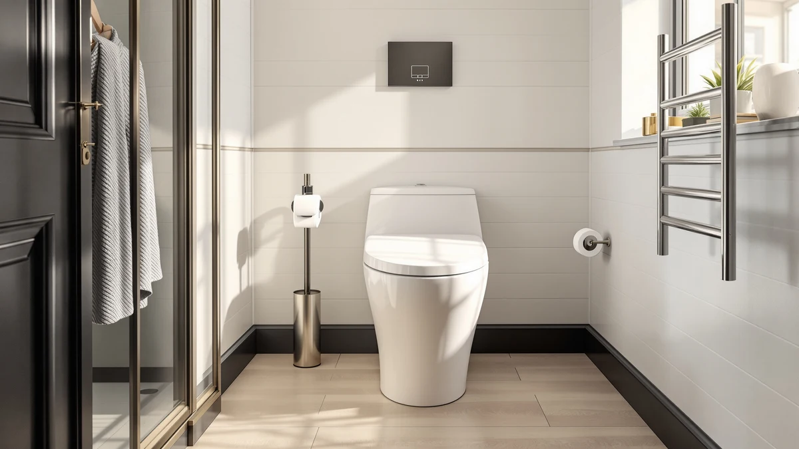

One Piece Toilet vs Smart Toilet (2026): Which Is Worth the Upgrade?
Prices and picks verified as of August 2026. Independent, reader-supported reviews.


Things to Know Before You Buy
- Power is the dealbreaker for smart toilets. Most smart toilets need a nearby GFCI outlet to run the bidet pump, heated seat, and dryer, so check your bathroom's wiring before you shop.
- The price gap is significant. One piece toilets in this comparison run $240 to $360, while smart toilets start near $1,000 and climb past $1,500 once bidet and dryer functions are included.
- Cleaning favors one piece toilets. A seamless one piece bowl wipes down in one pass, while a smart toilet has a wand, nozzle, and electronic housing that need their own maintenance.
- Smart toilets add comfort features beyond flush power. Heated seats, adjustable bidet pressure, warm air drying, and night lights come standard on most smart models, none of which a one piece toilet offers.
- Installation complexity differs. A one piece toilet is a standard two-person mechanical install, while a smart toilet also needs an electrical hookup and sometimes a dedicated outlet box.
The one piece toilet vs smart toilet decision comes down to how much technology you want built into a fixture you flush multiple times a day. A one piece toilet is a seamless ceramic unit with a single flush lever and nothing to plug in. A smart toilet adds a heated seat, a built-in bidet wand, warm air drying, and often a remote or app, all wired into the same seat and bowl.
We compared specs, pricing, and verified owner reviews across both categories rather than crowning one overall winner, because the right choice depends on your budget, your bathroom's outlets, and how much daily convenience you want. Below we break down build quality, price, and everyday use so you can decide which upgrade actually fits your bathroom.
Quick Answer
Choose a one piece toilet if you want a reliable, low-maintenance fixture at a fair price and don't need electronic features, since owners report fewer parts to fail and easier cleanup. Choose a smart toilet if bidet function, a heated seat, and app controls matter enough to justify a price that can run four to five times higher, and your bathroom already has power nearby. For most budgets, a one piece toilet remains the practical pick; a smart toilet is the upgrade for comfort-focused buyers with room to spend.
What is One Piece Toilet?
A one piece toilet fuses the tank and bowl into a single molded ceramic unit, with no seam between the two. That construction separates it from a two-piece design, and it's central to the one piece toilet vs smart toilet comparison, because the one piece keeps things mechanical and simple. Water fills the tank, you press a lever or button, and gravity plus a siphon jet clear the bowl. The fixture has no sensors, seat heater, or wiring to worry about.
The appeal is durability paired with low cost. Vitreous china rarely wears out, and with no electronics to fail, a one piece toilet from a brand like WOODBRIDGE or DeerValley can run for decades without a service call. Buyers often mention the sleek, low profile these units bring to a bathroom, and the sealed tank-to-bowl joint means less grime buildup over time. What you get is exactly what you see: a well-built flushing fixture, nothing more. If you want a bidet function, heated seat, or remote control, you'll need to add a separate bidet attachment or shop the smart toilet category instead.
What is Smart Toilet?
A smart toilet builds a bidet, a heated seat, warm air drying, and often remote control into the toilet itself, wiring all of it directly into the bowl and seat assembly. Instead of a mechanical flush lever, many models use a button panel or an app, and the bidet wand adjusts water temperature, pressure, and nozzle position on demand. This is the other half of the one piece toilet vs smart toilet comparison: technology layered onto the same core plumbing job.
Models like the EPLO Smart Toilet Bidet and the Casta Diva Smart Toilet add features you can't get from a standard fixture, including auto-open lids, deodorizing fans, and night lights. Most buyers describe a short learning curve and a real jump in daily comfort, especially in colder climates where a heated seat matters. The costs are real: these units need a nearby power outlet, carry more moving parts that can eventually need repair, and price out well above a standard toilet. Reviewers who value convenience over cost tend to rate these units highly, while budget-focused buyers often find the premium hard to justify.
Head-to-Head: Build Quality & Durability
Build quality tells two different stories. A one piece toilet is a single fired ceramic casting, so once it's mounted and bolted down, little can fail mechanically. WOODBRIDGE and DeerValley both use standard vitreous china construction rated for decades of use, and the biggest wear item is the flush valve or flapper, both cheap and simple to replace. In the one piece toilet vs smart toilet build comparison, the one piece wins on long-term simplicity because fewer components mean fewer failure points.
A smart toilet carries the same ceramic bowl but adds a pump, a heating element, a control board, and a wand mechanism, all of which can wear out over years of daily use. The EPLO and Casta Diva models we compared use sealed electronic housings rated for bathroom humidity, and manufacturer warranties on the electronic components typically run one to three years, shorter than the lifetime expectation of the ceramic base. When something does go wrong, it's usually the bidet pump or the seat sensor, not the toilet itself. If a component fails, repair usually means contacting the manufacturer rather than a local plumber, since the electronics aren't standardized parts.
Head-to-Head: Price & Value
Price is where the one piece toilet vs smart toilet comparison gets stark. The WOODBRIDGE and DeerValley one piece models we compared list between $240.80 and $318.93, solidly mid-range for a quality ceramic toilet. A smart toilet costs four to six times more: the EPLO Smart Toilet Bidet runs $1,499.96 and the Casta Diva Smart Toilet lists at $999.99, and that's before factoring in the electricity a heated seat and dryer draw over years of daily use.
That gap buys real functionality rather than a markup. You're paying for the bidet pump, heating element, control board, and often a remote, features a standard toilet doesn't attempt. For buyers on a fixed renovation budget, a one piece toilet plus a separate bidet attachment can approach smart toilet functionality for less money, though it won't match the integrated design or app controls.
Head-to-Head: Use Experience
Daily use is where the one piece toilet vs smart toilet gap feels most personal. A one piece toilet asks nothing of you beyond a flush, and there's genuinely little to think about: no settings, no remote, no charging or Wi-Fi setup. Cleaning takes one pass with a wipe, since there's no seam, wand, or electronic panel to work around.
A smart toilet changes the daily routine considerably. You adjust water temperature and pressure through a panel or app, the seat warms automatically, and many models auto-open the lid when you approach and auto-close after use. The comfort gains are real, especially the heated seat in winter and the bidet replacing toilet paper for most trips. The tradeoff is more upkeep: the wand nozzle needs occasional cleaning, the control panel needs to stay dry, and a power outage means losing every powered feature until service resumes. If you just want a toilet you never have to think about, stick with one piece. If you want your bathroom to feel like a small daily upgrade, that's what the smart toilet gives you.
When to Choose One Piece Toilet
Choose a one piece toilet if you want a dependable, low-maintenance fixture and don't need bidet or heating functions built in. It's the right call for rental properties, guest bathrooms, or any space where a power outlet isn't already near the toilet, since these units need no electricity at all. Budget-conscious renovations also favor the one piece: at $240 to $320, you get a durable, easy-to-clean fixture that will likely outlast the house's other bathroom fixtures. It also suits buyers who have already installed a separate bidet attachment or simply prefer fewer electronics in a bathroom exposed to humidity. If cost, simplicity, and long-term reliability matter more to you than daily comfort features, a one piece toilet is the practical choice in this one piece toilet vs smart toilet comparison.
When to Choose Smart Toilet
Choose a smart toilet if daily comfort and hygiene features are worth a significant premium to you, and your bathroom already has a nearby power outlet. It's the better fit for households prioritizing bidet function over toilet paper, anyone who wants a heated seat through cold winters, or buyers renovating a primary bathroom where the extra cost fits the overall budget. Accessibility matters too: auto-open lids, remote controls, and adjustable settings can make daily use easier for people with mobility limitations. That convenience costs money and adds complexity, so expect to pay $1,000 to $1,500 and to budget for eventual electronic repairs. If you've weighed the one piece toilet vs smart toilet decision and comfort features outweigh the price gap, models like the EPLO or Casta Diva are worth the investment.
Our Top Picks
Whichever way you lean, these are the three products from our comparison worth a closer look: two one piece toilets and one smart toilet, so you can weigh the real price and feature gap side by side.

Editor's Pick
WOODBRIDGEE One Piece Toilet with
Our top one piece pick. The WOODBRIDGE pairs a seamless, easy-to-clean body with a quiet soft-close seat and strong flush performance at a fair mid-range price, the one we'd recommend if you're skipping smart features altogether.
$318.93
Check Price on Amazon
Best Value
DeerValley Elongated One-Piece Toilet with
The budget one piece winner. DeerValley delivers the core benefits, seamless design, elongated comfort bowl, and easy cleaning, at the lowest price in this comparison. You don't need smart features to get a solid daily fixture.
$240.80
Check Price on Amazon
Premium Choice
EPLO Smart Toilet Bidet with
Our smart toilet pick. The EPLO Smart Toilet Bidet bundles a heated seat, adjustable bidet wand, and warm air drying into one unit, and the comfort gain is real if you have the budget and a nearby outlet.
$1,499.96
Check Price on AmazonFrequently Asked Questions
Is a smart toilet worth the extra cost over a one piece toilet?
It depends on how much you value the added features. A smart toilet costs three to six times more than a one piece toilet, but it adds a bidet, heated seat, and warm air drying that a standard fixture doesn't offer. The comfort gain is real, especially the heated seat and bidet function. Budget-focused buyers who don't need those features are usually better served by a one piece toilet.
Do smart toilets need a special outlet?
Most smart toilets need a grounded, GFCI-protected outlet within reach of the toilet to power the bidet pump, seat heater, and control board. If your bathroom doesn't already have an outlet near the toilet, budget for an electrician before you buy, since that installation cost isn't included in the toilet's price.
Which is easier to clean, a one piece toilet or a smart toilet?
A one piece toilet is easier to clean day to day. Its seamless ceramic body wipes down in one pass with no seam, wand, or electronic panel to navigate. A smart toilet's bidet nozzle and control housing need their own periodic cleaning, and manufacturers typically recommend specific products to avoid damaging the electronics.
Can I add bidet features to a one piece toilet instead of buying a smart toilet?
Yes, a separate bidet attachment or bidet seat can add spray function to an existing one piece toilet for a fraction of a full smart toilet's price. It won't include the integrated heated seat, auto-open lid, or app control most smart toilets offer, but it closes some of the functional gap for buyers who want bidet washing without the full smart toilet investment.
How long do smart toilets last compared to one piece toilets?
The ceramic base of both types can last decades, but a smart toilet's electronic components, the pump, heating element, and control board, typically carry warranties of one to three years and are the parts most likely to need service first. A one piece toilet has no electronics to fail, so its practical lifespan is usually limited only by the ceramic and flush valve, both of which are durable and simple to replace.
Final Verdict
There's no universal winner in the one piece toilet vs smart toilet decision, only the right fit for your bathroom and budget. A one piece toilet from a brand like WOODBRIDGE delivers a durable, low-maintenance fixture for a fraction of the price, with nothing electronic to eventually repair. A smart toilet like the EPLO justifies its premium with a heated seat, bidet function, and daily comfort a standard fixture can't match. If you're prioritizing reliability and value, start with the WOODBRIDGE; if comfort features are worth the investment, the EPLO is where we'd look next.